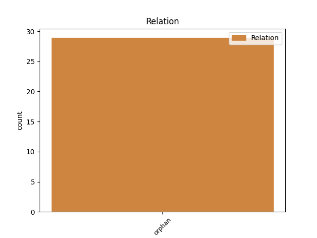
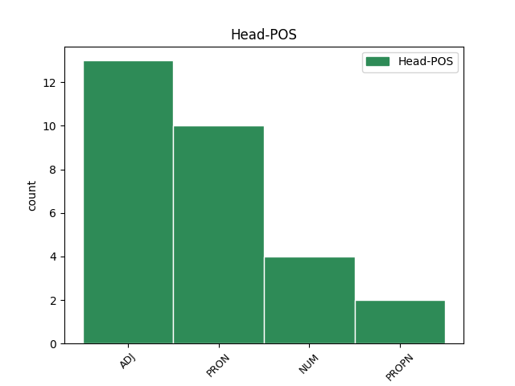
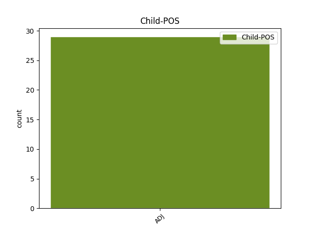

Distribution of features within this leaf



Agreement Rules sorted by frequency.
- When the dependent token is the orphan(orphan) of the head token, and the head token is ADJ and the dependent token is ADJ.
1 de _ _ _ _ 0 _ _ _
2 me _ _ _ _ 0 _ _ _
3 imperatore _ _ _ _ 0 _ _ _
4 scribis _ _ _ _ 0 _ _ _
5 te _ _ _ _ 0 _ _ _
6 ex _ _ _ _ 0 _ _ _
7 Philotimi _ _ _ _ 0 _ _ _
8 litteris _ _ _ _ 0 _ _ _
9 cognosse _ _ _ _ 0 _ _ _
10 sed _ _ _ _ 0 _ _ _
11 credo _ _ _ _ 0 _ _ _
12 te _ _ _ _ 0 _ _ _
13 iam _ _ _ _ 0 _ _ _
14 in _ _ _ _ 0 _ _ _
15 Epiro _ _ _ _ 0 _ _ _
16 cum _ _ _ _ 0 _ _ _
17 esses _ _ _ _ 0 _ _ _
18 binas _ _ _ _ 0 _ _ _
19 meas _ _ _ _ 0 _ _ _
20 de _ _ _ _ 0 _ _ _
21 omnibus _ _ _ _ 0 _ _ _
22 rebus _ _ _ _ 0 _ _ _
23 accepisse _ _ _ _ 0 _ _ _
24 unas unus ADJ A- Case=Acc|Degree=Pos|Gender=Fem|Number=Plur 0 _ _ _
25 a _ _ _ _ 0 _ _ _
26 Pindenisso _ _ _ _ 0 _ _ _
27 capto _ _ _ _ 0 _ _ _
28 alteras alter ADJ A- Case=Acc|Degree=Pos|Gender=Fem|Number=Plur 24 orphan _ ref=6.1.9
29 Laodicea _ _ _ _ 0 _ _ _
30 utrasque _ _ _ _ 0 _ _ _
31 tuis _ _ _ _ 0 _ _ _
32 pueris _ _ _ _ 0 _ _ _
33 datas _ _ _ _ 0 _ _ _
1 et _ _ _ _ 0 _ _ _
2 postquam _ _ _ _ 0 _ _ _
3 venerunt _ _ _ _ 0 _ _ _
4 in _ _ _ _ 0 _ _ _
5 locum _ _ _ _ 0 _ _ _
6 qui _ _ _ _ 0 _ _ _
7 vocatur _ _ _ _ 0 _ _ _
8 Calvariae _ _ _ _ 0 _ _ _
9 ibi _ _ _ _ 0 _ _ _
10 crucifixerunt _ _ _ _ 0 _ _ _
11 eum _ _ _ _ 0 _ _ _
12 et _ _ _ _ 0 _ _ _
13 latrones _ _ _ _ 0 _ _ _
14 unum unus NUM Ma Case=Acc|Gender=Masc|Number=Sing 0 _ _ _
15 a _ _ _ _ 0 _ _ _
16 dextris _ _ _ _ 0 _ _ _
17 et _ _ _ _ 0 _ _ _
18 alterum alter ADJ A- Case=Acc|Degree=Pos|Gender=Masc|Number=Sing 14 orphan _ ref=LUKE_23.33
19 a _ _ _ _ 0 _ _ _
20 sinistris _ _ _ _ 0 _ _ _
1 ego _ _ _ _ 0 _ _ _
2 vero _ _ _ _ 0 _ _ _
3 qui qui PRON Pr Case=Nom|Gender=Masc|Number=Sing|PronType=Rel 0 _ _ _
4 si _ _ _ _ 0 _ _ _
5 loquor _ _ _ _ 0 _ _ _
6 de _ _ _ _ 0 _ _ _
7 re _ _ _ _ 0 _ _ _
8 publica _ _ _ _ 0 _ _ _
9 quod _ _ _ _ 0 _ _ _
10 oportet _ _ _ _ 0 _ _ _
11 insanus insanus ADJ A- Case=Nom|Degree=Pos|Gender=Masc|Number=Sing 3 orphan _ ref=4.6.2
12 si _ _ _ _ 0 _ _ _
13 quod _ _ _ _ 0 _ _ _
14 opus _ _ _ _ 0 _ _ _
15 est _ _ _ _ 0 _ _ _
16 servus _ _ _ _ 0 _ _ _
17 existimor _ _ _ _ 0 _ _ _
18 si _ _ _ _ 0 _ _ _
19 taceo _ _ _ _ 0 _ _ _
20 oppressus _ _ _ _ 0 _ _ _
21 et _ _ _ _ 0 _ _ _
22 captus _ _ _ _ 0 _ _ _
23 quo _ _ _ _ 0 _ _ _
24 dolore _ _ _ _ 0 _ _ _
25 esse _ _ _ _ 0 _ _ _
26 debeo _ _ _ _ 0 _ _ _
1 et _ _ _ _ 0 _ _ _
2 baiulans _ _ _ _ 0 _ _ _
3 sibi _ _ _ _ 0 _ _ _
4 crucem _ _ _ _ 0 _ _ _
5 exivit _ _ _ _ 0 _ _ _
6 in _ _ _ _ 0 _ _ _
7 eum _ _ _ _ 0 _ _ _
8 qui _ _ _ _ 0 _ _ _
9 dicitur _ _ _ _ 0 _ _ _
10 Calvariae _ _ _ _ 0 _ _ _
11 locum _ _ _ _ 0 _ _ _
12 hebraice _ _ _ _ 0 _ _ _
13 Golgotha _ _ _ _ 0 _ _ _
14 ubi _ _ _ _ 0 _ _ _
15 eum _ _ _ _ 0 _ _ _
16 crucifixerunt _ _ _ _ 0 _ _ _
17 et _ _ _ _ 0 _ _ _
18 cum _ _ _ _ 0 _ _ _
19 eo _ _ _ _ 0 _ _ _
20 alios _ _ _ _ 0 _ _ _
21 duos _ _ _ _ 0 _ _ _
22 hinc _ _ _ _ 0 _ _ _
23 et _ _ _ _ 0 _ _ _
24 hinc _ _ _ _ 0 _ _ _
25 medium medius ADJ A- Case=Acc|Degree=Pos|Gender=Neut|Number=Sing 27 orphan _ ref=JOHN_19.18
26 autem _ _ _ _ 0 _ _ _
27 Iesum Iesus PROPN Ne Case=Acc|Gender=Masc|Number=Sing 0 _ _ _
Disagree Examples:
1 alia _ _ _ _ 0 _ _ _
2 vero _ _ _ _ 0 _ _ _
3 ceciderunt _ _ _ _ 0 _ _ _
4 in _ _ _ _ 0 _ _ _
5 terram _ _ _ _ 0 _ _ _
6 bonam _ _ _ _ 0 _ _ _
7 et _ _ _ _ 0 _ _ _
8 dabant _ _ _ _ 0 _ _ _
9 fructum _ _ _ _ 0 _ _ _
10 aliud alius ADJ Px Case=Nom|Gender=Neut|Number=Sing 0 _ _ _
11 centesimum centesimus ADJ Mo Case=Acc|Gender=Masc,Neut|Number=Sing 10 orphan _ ref=MATT_13.8
12 aliud _ _ _ _ 0 _ _ _
13 sexagesimum _ _ _ _ 0 _ _ _
14 aliud _ _ _ _ 0 _ _ _
15 tricesimum _ _ _ _ 0 _ _ _
1 alia _ _ _ _ 0 _ _ _
2 vero _ _ _ _ 0 _ _ _
3 ceciderunt _ _ _ _ 0 _ _ _
4 in _ _ _ _ 0 _ _ _
5 terram _ _ _ _ 0 _ _ _
6 bonam _ _ _ _ 0 _ _ _
7 et _ _ _ _ 0 _ _ _
8 dabant _ _ _ _ 0 _ _ _
9 fructum _ _ _ _ 0 _ _ _
10 aliud _ _ _ _ 0 _ _ _
11 centesimum _ _ _ _ 0 _ _ _
12 aliud alius ADJ Px Case=Nom|Gender=Neut|Number=Sing 0 _ _ _
13 sexagesimum sexage(n)simus ADJ Mo Case=Acc|Gender=Masc,Neut|Number=Sing 12 orphan _ ref=MATT_13.8
14 aliud _ _ _ _ 0 _ _ _
15 tricesimum _ _ _ _ 0 _ _ _
1 alia _ _ _ _ 0 _ _ _
2 vero _ _ _ _ 0 _ _ _
3 ceciderunt _ _ _ _ 0 _ _ _
4 in _ _ _ _ 0 _ _ _
5 terram _ _ _ _ 0 _ _ _
6 bonam _ _ _ _ 0 _ _ _
7 et _ _ _ _ 0 _ _ _
8 dabant _ _ _ _ 0 _ _ _
9 fructum _ _ _ _ 0 _ _ _
10 aliud _ _ _ _ 0 _ _ _
11 centesimum _ _ _ _ 0 _ _ _
12 aliud _ _ _ _ 0 _ _ _
13 sexagesimum _ _ _ _ 0 _ _ _
14 aliud alius ADJ Px Case=Nom|Gender=Neut|Number=Sing 0 _ _ _
15 tricesimum tricesimus ADJ Mo Case=Acc|Gender=Masc,Neut|Number=Sing 14 orphan _ ref=MATT_13.8
1 sicut _ _ _ _ 0 _ _ _
2 enim _ _ _ _ 0 _ _ _
3 homo _ _ _ _ 0 _ _ _
4 proficiscens _ _ _ _ 0 _ _ _
5 vocavit _ _ _ _ 0 _ _ _
6 servos _ _ _ _ 0 _ _ _
7 suos _ _ _ _ 0 _ _ _
8 et _ _ _ _ 0 _ _ _
9 tradidit _ _ _ _ 0 _ _ _
10 illis _ _ _ _ 0 _ _ _
11 bona _ _ _ _ 0 _ _ _
12 sua _ _ _ _ 0 _ _ _
13 et _ _ _ _ 0 _ _ _
14 uni _ _ _ _ 0 _ _ _
15 dedit _ _ _ _ 0 _ _ _
16 quinque _ _ _ _ 0 _ _ _
17 talenta _ _ _ _ 0 _ _ _
18 alii alius ADJ Px Case=Dat|Gender=Masc|Number=Sing 20 orphan _ ref=MATT_25.15
19 autem _ _ _ _ 0 _ _ _
20 duo duo NUM Ma Case=Acc|Gender=Neut|Number=Plur 0 _ _ _
21 alii _ _ _ _ 0 _ _ _
22 vero _ _ _ _ 0 _ _ _
23 unum _ _ _ _ 0 _ _ _
24 unicuique _ _ _ _ 0 _ _ _
25 secundum _ _ _ _ 0 _ _ _
26 propriam _ _ _ _ 0 _ _ _
27 virtutem _ _ _ _ 0 _ _ _
28 et _ _ _ _ 0 _ _ _
29 profectus _ _ _ _ 0 _ _ _
30 est _ _ _ _ 0 _ _ _
31 statim _ _ _ _ 0 _ _ _
1 sine _ _ _ _ 0 _ _ _
2 offensione _ _ _ _ 0 _ _ _
3 estote _ _ _ _ 0 _ _ _
4 Iudaeis _ _ _ _ 0 _ _ _
5 et _ _ _ _ 0 _ _ _
6 gentilibus _ _ _ _ 0 _ _ _
7 et _ _ _ _ 0 _ _ _
8 ecclesiae _ _ _ _ 0 _ _ _
9 Dei _ _ _ _ 0 _ _ _
10 sicut _ _ _ _ 0 _ _ _
11 et _ _ _ _ 0 _ _ _
12 ego _ _ _ _ 0 _ _ _
13 per _ _ _ _ 0 _ _ _
14 omnia _ _ _ _ 0 _ _ _
15 omnibus _ _ _ _ 0 _ _ _
16 placeo _ _ _ _ 0 _ _ _
17 non _ _ _ _ 0 _ _ _
18 quaerens _ _ _ _ 0 _ _ _
19 quod _ _ _ _ 0 _ _ _
20 mihi _ _ _ _ 0 _ _ _
21 utile _ _ _ _ 0 _ _ _
22 est _ _ _ _ 0 _ _ _
23 sed _ _ _ _ 0 _ _ _
24 quod qui PRON Pr Case=Nom|Gender=Neut|Number=Sing|PronType=Rel 0 _ _ _
25 multis multus ADJ A- Case=Dat|Degree=Pos|Gender=Masc|Number=Plur 24 orphan _ ref=1COR_10.33
26 ut _ _ _ _ 0 _ _ _
27 salvi _ _ _ _ 0 _ _ _
28 fiant _ _ _ _ 0 _ _ _